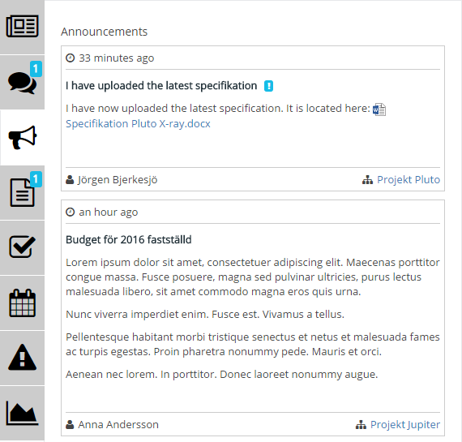
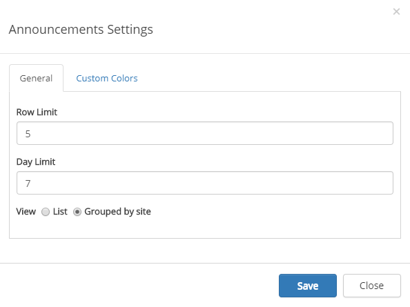
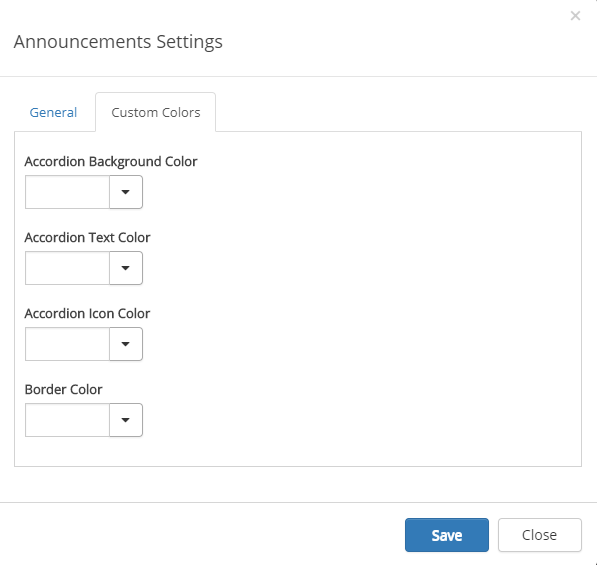

The Announcements Control aggregates the latest non expired announcements that the user has read access to (from all sites, not only the ones the user is following).
Note! The Announcements Control is based on the search engine in SharePoint. It may take several minutes before an announcement created in a team site is shown on the start page.
Announcements is often a part of the Notification Panel, for example:

Settings for Announcements in the Notification Panel is set there, see:
Announcements can also be added as a separate control. To change the settings for the separate control, activate the Edit switch and click the settings gear.
This will open the settings dialog.

